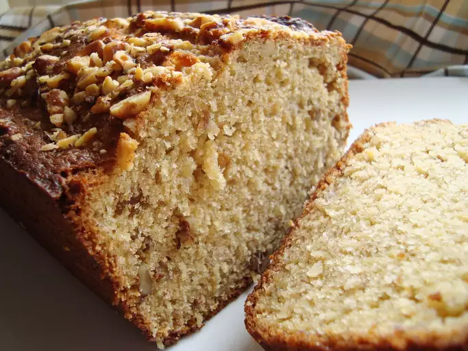

Homepage
Brown Sugar Banana Nut Bread

Description
A moist quick bread made with ripe bananas, brown sugar, and chopped nuts
for a tender, flavorful loaf.
Ingredients
- Half cup of softened butter
- 1 cup of brown sugar
- 2 large eggs
- 1 tablespoon vanilla extract
- 4 mashed very ripe bananas
- 2 cups of all-purpose flour
- 3 teaspoons of baking powder
- Half teaspoon of salt
- Half cup of chopped walnuts
Steps
-
Preheat the oven to 350 degrees F(175 degrees C). Lightly grease a
9x5-inch loaf pan
-
Beat butter and sugar together in a large bowl until light and fluffy.
Stir in the eggs one at a time, beating well with each direction, then
stir in vanilla extract and mashed banana. Sift flour, baking powder,
and salt together in a separate bowl
-
Blend banana mixture into flour mixture; stir just to combine. Fold in
walnuts. Pour batter into prepared pan.
-
Bake in the preheated oven until a toothpick inserted into center of
loaf comes out clean, about 1 hour.